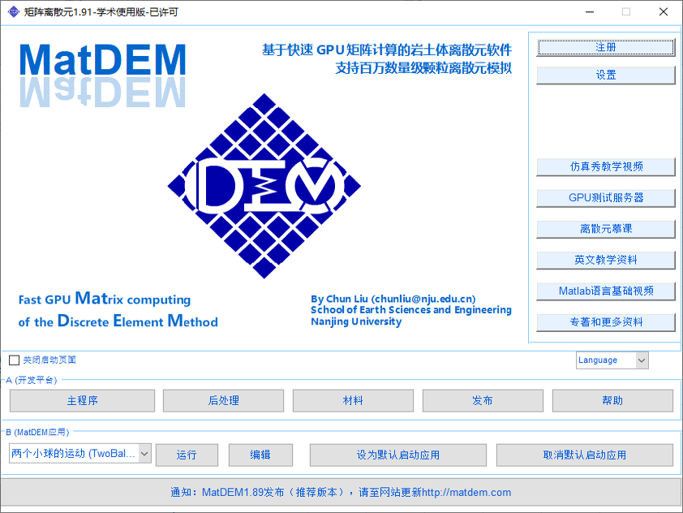
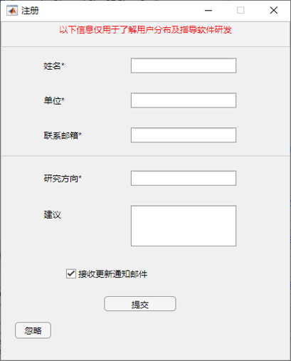
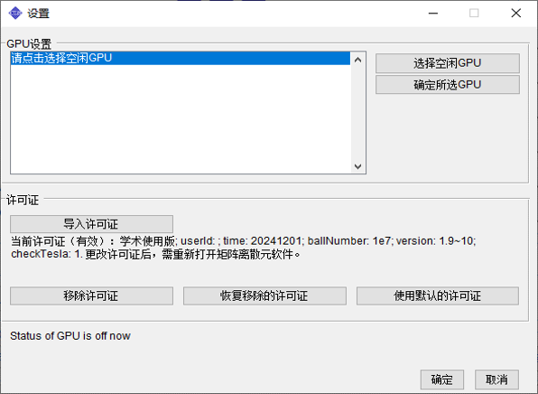
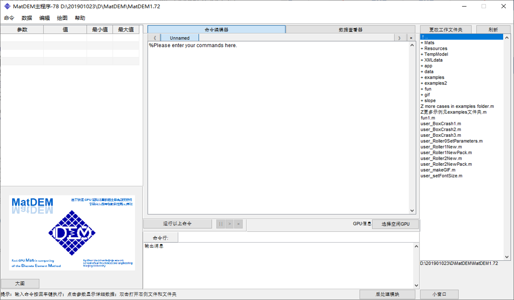
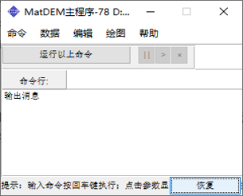
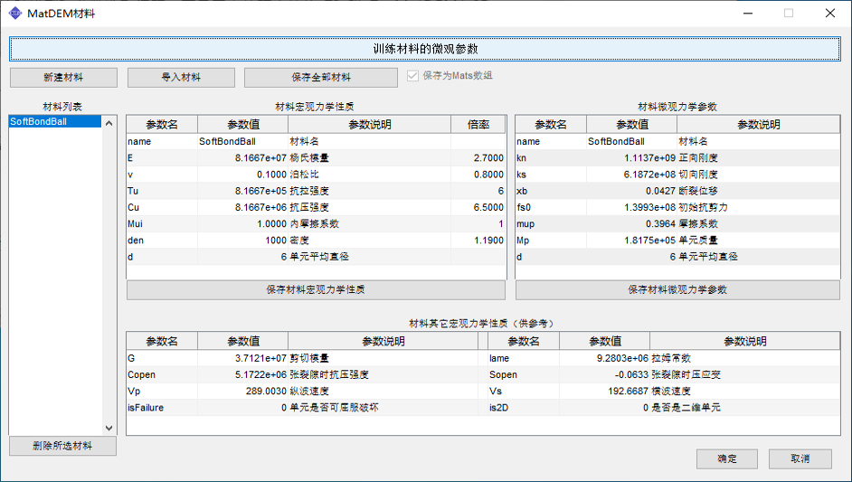
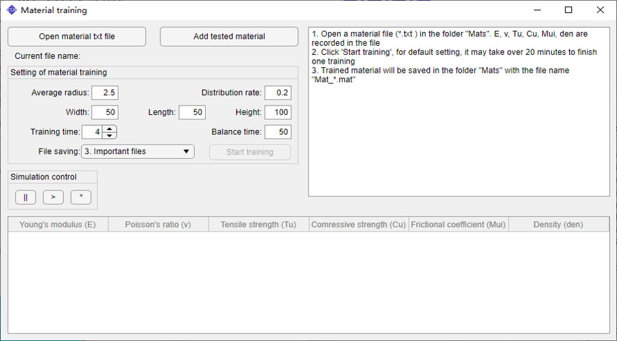
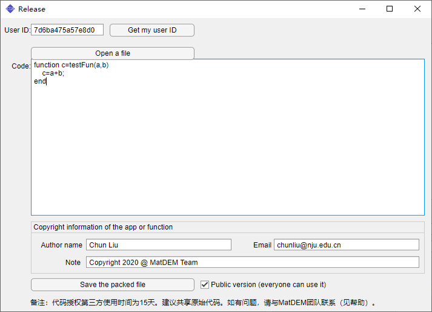
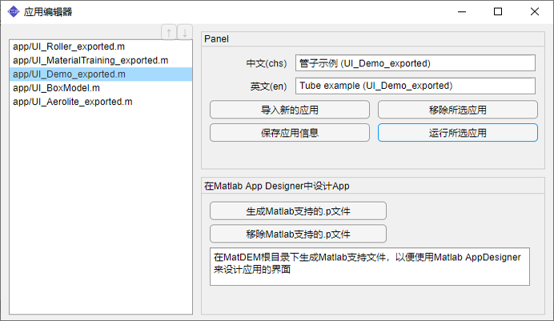
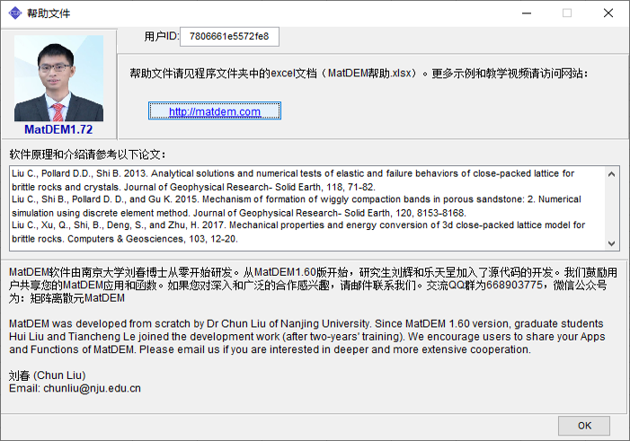

用户界面

- 启动窗口
- 基于MatDEM计算平台，可以迅速构建新的离散元软件。启动页面分为A和B两个模块。A为开发平台，可通过修改和编写二次开发代码，完成各类离散元数值模拟，并基于MatDEM计算平台快速构建各类专业离散元窗口应用（软件）。B模块为MatDEM应用（App），其中已提供多个应用的示例，开发者可以定制和分享新的软件，供普通用户使用。
 
- 用户注册窗口
- 用于向研发团队提交使用反馈和研发建议
- 设置窗口
- 选择GPU和导入软件使用许可证
 
- 主程序窗口
- 点击模块A中的主程序按钮，打开如上所示的主程序窗口。
其中间是 代码编辑器 和 数据查看器 。分别用于代码查看编辑和模拟数据的查看，可点击上方按钮来切换。使用者可直接在命令编辑器中输入并运行二次开发代码。命令编辑器和数据查看器中均可打开多个标签页，方便使用者快速切换。 - 左侧为 数据表格区 。程序运行时产生的各类变量都会在其中显示。左边的数据表格中包含B和d两个常用对象，单击变量d，在中间的数据查看器中显示d对象中的参数，再点击参数d.mo，则会出现新的标签页d.mo，并显示其内部的参数。
右侧为 文件管理区 ，双击即可载入存放于根目录之下的各个代码文件，文件会在中间的命令编辑器中显示。如果双击子文件夹会进入次级目录，双击数据文件则会将数据读入至工作空间中。 - 窗口的下部是 命令行 和 消息输出栏 。使用者可在命令行中逐句输入命令，并按回车来执行。程序运行时的各类信息提示则会显示在下方的消息输出栏中。
窗口左下角还有一个图像显示区。在默认情况下，程序运行过程中生成的一切图像都会在其中显示，使用者也可以通过Matlab的figure函数生成新窗口显示图像。
当需要保存图像或制作动画时，可点击右下角的“后处理模块”（见下）。窗口右下角的“小窗口”用于缩小窗口。点击后，整个窗口将缩小为命令行和消息输出栏。当同时运行多个MatDEM程序时，可将窗口缩小，以监测模拟的运行状态。

- 后处理窗口
- 除了可以通过主程序窗口进入后处理模块外，使用者也可以在启动界面中直接打开后处理窗口。后处理窗口同时支持控件交互与输入命令两种方式。窗口左上方的三个下拉框给出了三组后处理显示类型，包括：①模拟结果，用于显示d.data中的计算数据；②模型参数，用于显示d.mo中的参数数据；③过程曲线，用于显示d.status中的记录数据。在后处理窗口中还可以实现GIF动画制作。
 
- 材料窗口
- 如上左图所示，该窗口用于查看和编辑材料宏微观力学参数。使用者可新建材料，或导入已有的
.txt或.mat材料文件，进行宏微观力学参数的编辑与转换。在本窗口中，各材料以元胞数组的形式存在，显示在窗口左侧的列表中。在完成编辑后，可将列表中的材料以.mat文件的形式保存下来，用于后续数值模拟。离散元建模的目标是要在计算机中制造出接近真实岩土体结构和力学性质的离散元堆积体，相应的单元间接触模型和参数选取问题一直是国内外研究的热点和难点。MatDEM1.65版之后，提供了线弹性模型的自动训练应用，可以显著地降低建模的难度，提高建模的效率。目前，MatDEM的材料自动训练仅限于线弹性接触模型，对于复杂的接触模型，还亟待深入研究。
 
- 发布窗口
- MatDEM1.70实现了向指定用户授权使用app的功能。开发者可以利用MatDEM计算平台封装专业离散元软件，并授权给指定用户使用，形成新的知识产权。当点击启动窗口“发布”按钮后，打开“发布”窗口，其左上角显示当前软件的用户编名。将他人的用户编号粘贴到此处，然后打开需要授权的代码（如App，函数或流程代码），在下方输入作者信息后，保存新的代码文件即可。新的代码仅在授权的电脑软件中才能使用，其它电脑上会跳出版权所有信息。当选中
Public version (everyone can use it)时，打包的代码可供所有人使用。关于流程代码的授权，可见user_Roller0SetParameters.m - 应用编辑器
- MatDEM1.78增加了应用编辑器，可以增加删除应用。同时，提供了在Matlab中利用AppDesigner设计应用界面和进行调试的功能。注意：在运行App的.m文件时，如出现“字符串向量未正常终止”的错误，需要用记事本打开.m文件，并将其存为ANSI编码，否则不支持中文。

- 帮助窗口
- MatDEM软件由南京大学刘春博士从零开始研发。从MatDEM1.60版开始，研究生刘辉和乐天呈加入了源代码的开发。我们鼓励用户共享您的MatDEM应用和函数。如果您对深入和广泛的合作感兴趣，请邮件联系我们。交流QQ群为668903775，微信公众号为：矩阵离散元MatDEM